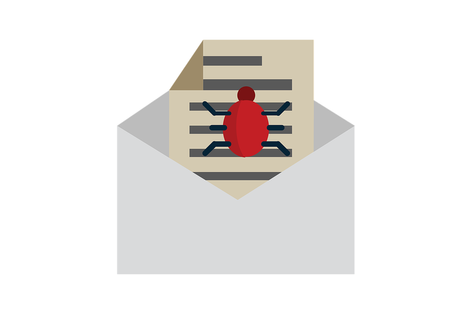

Types of Social Engineering
Social engineering comes in many forms, some being more time and labor intensive than others.
Online Methods
Most methods of social engineering involve aspects of online contacts between both the hacker and the person they are trying to obtain information from.

Perhaps the most common example of social engineering seen today is phising. With phishing scams, the individual trying to recieve information from their victim sends malicious content in the form of emails with links or attachmets. Such attacks typically cause the victim to feel a sense of urgency when or fear with the intent of making them act on a matter quickly. Such scams are accompished by impersonating a trusted figure and asking the victim for sensitive or personal information in order to have the issue resolved.
Baiting is a form of social engineering in which the individual offers their victim a reward in exchange of information. These sites usually come in the form of sites that say the victim is the winner of a free gift. The user is then required to input personal information in order to claim their reward. From this hackers or identity theifs are able to gain access to private informations includign the victims address or credit card information
Another for of social engineering is pretexting. Pretexting is when an individual fabricates a story that allows them to ask another individual for certain private and personal informatin. This fabrication is meant to leave little uncertainty between the individual and their victim as to not arouse suspicion when the individual asks for such information. The use of pretexting requires a substantial amount of knowledge on the victim or company in order to make the story seem as plausible as possible.
In Person Methods
While the most commonly seen types of social enginnering are seen online, in person methods exists as well. These methods are performed through physical actions including following the person into a restricted area or impersonating a real life figure to gain access to physical content such as files or confidential data on a computer.
In tailgating, an individual phisically gains access to an area that they have no authoirzation to by following behind an employee who is authorized to enter the area. The individual typically impersonates another figure,whether made up or real, and creates a fabricated story as to why they are there. This type of social engineering mostly occurs in a company or business setting. Similar to pretexting, the individaul must have a substaintial knowledge on the company in order to not arouse suspicion.
Impersonation is when the individual attempting to obtain information disguises themselves as another individual. This cThe use of impersonation can be found throughout almost all methods of social engineering as the individual wanting to obtain information is usually under the disguise of someone else in order to receive the information they want.